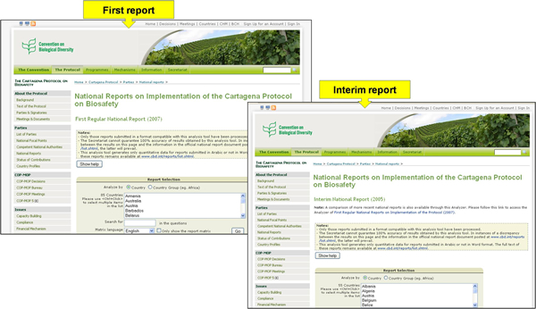
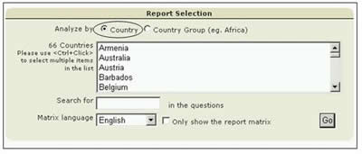
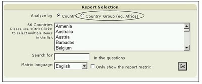

Desde la sección Informes Nacionales de la página Presentación de Informes, se puede acceder a los informes nacionales sobre la implementación del Protocolo seleccionando un país en el menú desplegable que se encuentra en el texto.

Esta sección proporciona además un enlace al Analizador de Informes Nacionales. El cual es una herramienta de búsqueda que ayuda a los usuarios a reagrupar los datos y analizarlos según la Parte seleccionada, las áreas geográficas, los grupos económicos y otros criterios de selección.

Con el Analizador, el usuario puede refinar la búsqueda usando palabras incluidas en las preguntas o seleccionando el idioma original usado para su análisis. Seleccionando el botón Ir, obtiene los resultados de la búsqueda. Estos se presentan en una tabla debajo de la herramienta de búsqueda.

